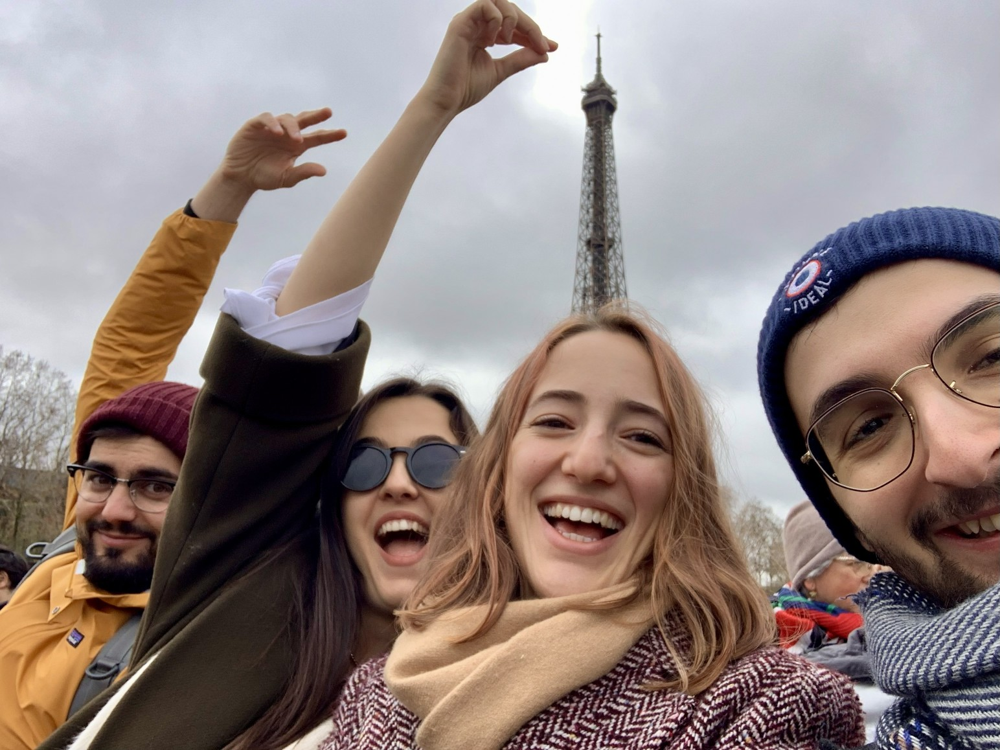
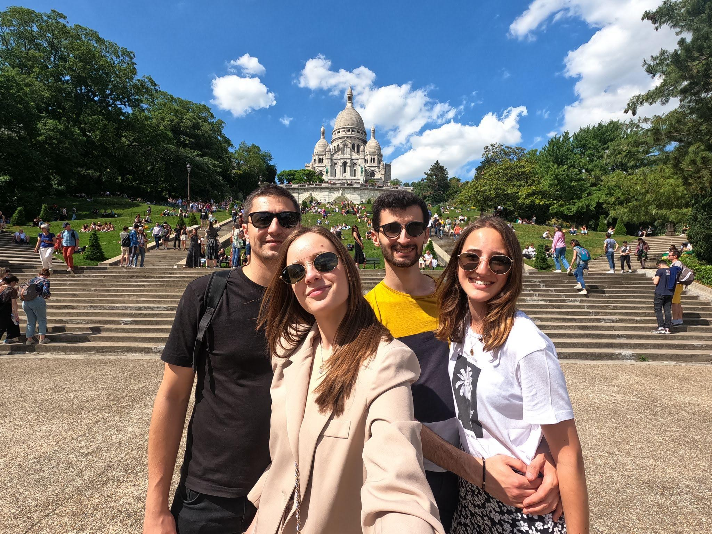
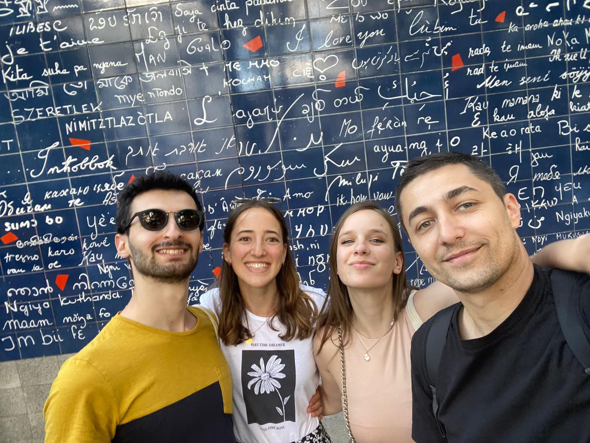

Posetite Pariz
Ako želite da iskoristite vašu posetu Francuskoj da posetite Pariz, evo nekoliko informacija koje bi vam mogle biti korisne.
Pristup i hotel
Preporučujemo da spavate blizu sale l'Orangerie du moulin u subotu uveče (pogledajte
ovde) jer se lokacija nalazi sat vremena od Pariza.
Za ostatak vašeg boravka, preporučujemo da pronađete smeštaj bliži Parizu. Sledeća mapa daje naše preporuke
za pronalaženje smeštaja.
Pariski centar je označen plavom bojom, hoteli tamo će biti skupi.
Gradovi označeni zelenom bojom su direktno dostupni i brzo dostupni transportom iz Pariza, hoteli će tamo
biti jeftiniji nego u Parizu.
Oni u žutoj boji su prilično blizu Parizu, ali sa manje transporta ili više izmena.
Oni u narandžastoj boji su slični, ali u manje ugodnim i bezbednim područjima.
Konačno, savetujemo vam da izbegnete one u crvenoj boji jer su previše daleko od Pariza.
Vodite računa da vaš smeštaj ne bude previše udaljen pešice od transporta, čak i ako je grad blizu Parizu.
Možete simulirati rutu do centra Pariza pomoću Google Maps-a da promenite vremenske trajanja,
prilagođavajući vremenske okvire da vidite da li ima transporta kasno u toj oblasti.
Transport
Korišćenje javnog prevoza u Parizu funkcioniše preko Navigo karte, koja je dostupna na telefonu ili u
papirnoj verziji (može se kupiti u svakoj metro stanici koja ima šalter).
Prevoz u Parizu je organizovan u 5 zona. Cene karte koje smo napisali ispod uključuju svih 5 zona. Ako
odlučite da uzmete manje zona, cena će biti vrlo malo niža.
Pažnja: Aerodromi kao i neke aktivnosti navedene kasnije (Park Asteriks, Diznilend, Dvorac Versaj ...)
nalaze se u zoni 5.
Postoji više vrsta karata u zavisnosti od trajanja i učestalosti korišćenja
prevoza.
Dnevna karta (12€) omogućava putovanja po celoj oblasti Île-de-France, osim do aerodroma.
Nedeljna karta (31,60€) omogućava putovanja po celoj oblasti Île-de-France (Ako izaberete tu
kartu, uzmite). Važi isključivo od ponedeljka do nedelje (ako hoćete da počnete u sredu, karta će trajati do
nedelje a ne do sledeće srede).
Ove dve karte se izrađuju u stanici kod službenika na šalteru, obićno pitaju fotografiju.
Pojedinačna karta (2,50€) važi za jedno putovanje (ne uključuje aerodrome).
Turistička karta (30€/dan) veoma skupa po našem mišljenju; uključuje i prevoz sa aerodroma Orly i Roissy.
Cene će se blago povećati do 2026. godine, kao i svake godine nažalost.
✈️ Aerodromi u Parizu
U Parizu postoje tri aerodroma:
Roissy (CDG) i Orly (ORY) : dostupni su javnim prevozom. Jedna karta
košta oko 13€, a prevoz je uključen u neke od gore pomenutih karata.
Beauvais : nalazi se znatno
dalje. Do njega se stiže autobusom van tarife Île-de-France (cena povratne karte 29,90€). Preporučuje se
rezervacija karata unapred preko interneta, jer su skuplje ako se kupe na licu mesta.
Aktivnosti u Parizu
Pariz je pun prelepih mesta i ne može se sve videti u jednoj poseti. Evo naše liste
omiljenih pariskih mesta.
Aktivnosti u Parizu :
🗼 Ajfelov toranj (Tour Eiffel)
Simbol Pariza i jedno od najpoznatijih mesta na svetu. Možete se popeti liftom ili stepenicama i uživati u
pogledu na ceo grad, posebno romantično uveče kada svetli svakih sat vremena ✨
Cena: 14.50€ za stepenice do 2. sprata ili 27.50€ za vrh.
23.10€ za lift do 2. sprata ili 36.10€ za vrh.

🏛️ Luvr (Louvre)
Najpoznatiji muzej na svetu, dom Mona Lize. 🎨 Čak i ako ne uđete unutra, vredi prošetati se oko staklene
piramide i uživati u vrtu Tilerija (Jardin des Tuileries)🌿
Cena (Muzej) : 22€
🏰 Trijumfalna kapija (Arc de Triomphe)
Impozantan spomenik posvećen francuskoj istoriji. Popnite se na vrh i videćete
Elizejske poljane (Champs-Élysées) u svom punom veličanstvu.
Cena: 16€ (Možete se popeti na vrhu
kapije).
🛍️ Elizejske poljane (Champs-Élysées)
Najpoznatija ulica u Parizu, puna luksuznih radnji, kafića i šarma. Savršena za šetnju i kupovinu. 👜
⛪ Sacré-Cœur + Monmartre + Zid „Volim te“ (Le mur des je t'aime)
Umetnički deo Pariza. 🎨 Uživajte u pogledu sa vrha bazilike, lutajte po uličicama Monmartra i pronađite zid
sa natpisom „Volim te“ na više od 250 jezika. 💕 Probajte da pronađete srpski !
Ulaz u baziliku Sacré-Cœur je besplatan, ali često ima čekanja. ⏳ Za penjanje na vrh kupole i njenih 280
stepenica cena je 8€.


⛪ Notr Dam (Notre-Dame)
Poznata katedrala na ostrvu Cité, pravo remek-delo gotičke arhitekture. Iako je delimično oštećena u požaru,
i dalje odiše istorijom i lepotom. 🔥
Ulaz u baziliku Notre-Dame je besplatan, ali često ima čekanja. ⏳

🛶 Krstarenje Senom (Croisière sur la Seine)
Romantična vožnja brodom sa pogledom na Ajfelov toranj i mostove Pariza. 🌉
Cena: 18€, ali zavisi od kompanije broda.
🖼️ Muzej Orsej (Musée d'Orsay)
Nekadašnja železnička stanica, sada muzej sa najlepšim impresionističkim slikama. 🎨
Cena: 14€
🌳 Park Luksemburg (Jardin du Luxembourg)
Mirno mesto za šetnju i piknik u samom srcu Pariza. ☀️
💃 Kabare Mulen Ruž (Moulin Rouge)
Istorijsko i zabavno mesto za nezaboravno veče u Monmartru. 🎭 Poznato po svojim spektakularnim kabaretskim
predstavama, Mulen Ruž je simbol pariskog noćnog života. Njegov prepoznatljiv eksterijer podseća na crveni
vetrenjača, što ga čini jedinstvenim.
Aktivnosti u okolini Pariza :
🎢 Diznilend Pariz (Disneyland Paris)
Savršen izlet za porodice i parove! 🐭✨ Magija Disneya, parade i vožnje, sve to na samo 40 minuta od centra
Pariza. 🚄
🎢 Park Asteriks (Parc Astérix)
Zabavni park inspirisan popularnim francuskim stripom o Asteriksu i Obeliksu. 🎠 Manje poznat turistima, ali
veoma zabavan i autentično francuski.
Cena : 65€
🏰 Dvorac Versaj (Château de Versailles)
Jedan od najimpresivnijih dvoraca u Evropi, raskošne kraljevske sobe, Ogledalna sala i ogromni vrtovi sa
fontanama.
Cena: 21€ za dvorac i vrtove (više ako želite da vidite Trianon i Marie-Antoinettein dvorac).
🏰 Vaux-le-Vicomte
Prelepi barokni dvorac koji je poslužio kao inspiracija za Versaj, intimniji i često manje gužvan.
Cena: 23.90€ radnim danima ili 25.90€ vikendom.